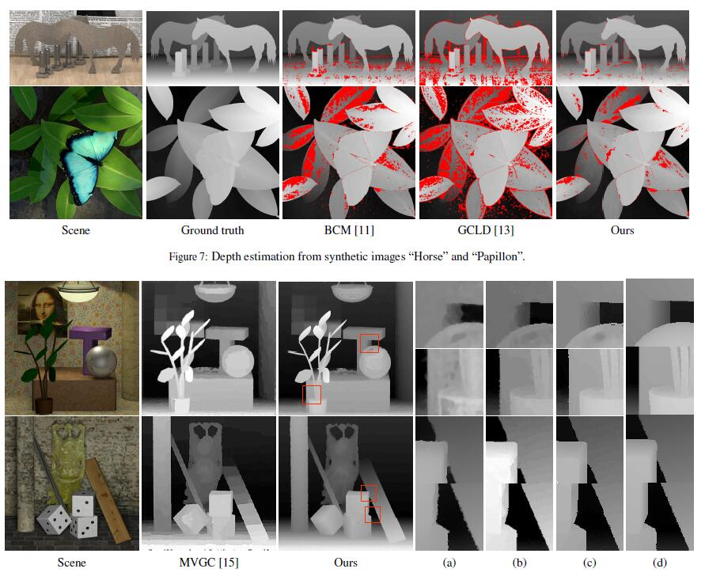

2017
Enhancing Detection Model for Multiple Hypothesis Tracking
In proceedings of IEEE Conference on Computer Vision and Pattern Recognition Workshops. 2017:2143-2152
CVPR
Geometric Occlusion Analysis in Depth Estimation using Integral Guided Filter for Light-Field Image
IEEE Transactions on Image Processing. 2017, PP(99):1-1
TIP
Occlusion-aware depth estimation for light field using multi-orientation EPIs
Pattern Recognition
PR
DeepDiff Learning deep difference features on human body parts for person re-identification
Neurocomputing, 2017, 241
Neurocomputing
Robust Local Effective Matching Model for Multi-Target Tracking
In proceedings of the 18th Pacific Rim Conference on Multimedia
PCM
2016
Robust Visual Tracking Using Correlation Response Map
In proceedings of IEEE International Conference on Image Processing. 2016:1689-1693
ICIP
Person Re-identification Based On Hierarchical Bipartite Graph Matching
In proceedings of IEEE International Conference on Image Processing. 2016:4255-4259
ICIP
Segmentation of light field image with the structure tensor
In proceedings of IEEE International Conference on Image Processing. 2016:1469-1473
ICIP
Discriminative Dictionary Learning Sparse Coding for Person Re-Identification
IEEE Intelligent Vehicles Symposium. 2016:1338-1343
IV
Cellular Automata Based on Occlusion Relationship for Saliency Detection
International Conference on Knowledge Science, Engineering and Management. 2016:pp 28-39
KSEM
Multi-view Multi-object Tracking Based on Global Graph Matching Structure
In proceedings of the 17th Pacific Rim Conference on Multimedia: Advances in Multimedia Information Processing
PCM
PSTG-based Multi-Label Optimization for Multi-Target Tracking
Computer Vision & Image Understanding. 2016, 144(C):217-227
CVIU

Robust Depth Estimation for Light Field via Spinning Parallelogram Operator
Computer Vision & Image Understanding, 2016, 145(C):148-159
CVIU

Saliency analysis based on depth contrast increased
In proceedings of IEEE International Conference on Acoustics, Speech and Signal Processing. IEEE, 2016:1347-1351
ICASSP

Robust saliency propagation based on random walks
In proceedings of IEEE International Conference on Acoustics, Speech and Signal Processing. IEEE, 2016:1821-1825.
ICASSP

Relative location for light field saliency detection
In proceedings of IEEE International Conference on Acoustics, Speech and Signal Processing. IEEE, 2016:1631-1635.
ICASSP
2015
Weight-based sparse coding for multi-shot person re-identification
Science China(Information Sciences). 2015, 58(10):100104-100104
SCIS
Person Re-identification via Learning Visual Similarity on Corresponding Patch Pairs
International Conference on Knowledge Science, Engineering and Management. 2015:787-798
KSEM
Person re-identification by unsupervised color spatial pyramid matching
International Conference on Knowledge Science, Engineering and Management. 2015:799-810
KSEM
Segment-Based Depth Estimation in Light Field Using Graph Cut
International Conference on Knowledge Science, Engineering and Management. 2015:248-259
KSEM
Multi-target Tracking via Paratactic-serial tracklet graph
In proceedings of IEEE International Conference on Image Processing. 2015
ICIP
Guided Integral Filter for Light Field Stereo Matching
In proceedings of IEEE International Conference on Image Processing. 2015:852-856
ICIP
A Structured Light 3D Measurement System Based on Heterogeneous Parallel Computation Model
IEEE/ACM International Symposium on Cluster, Cloud and Grid Computing. 2015:1027-1036
CCGrid
High dynamic range saturation intelligence avoidance for three-dimensional shape measurement
IEEE/ACM International Symposium on Cluster, Cloud and Grid Computing. 2015:981-990
CCGrid